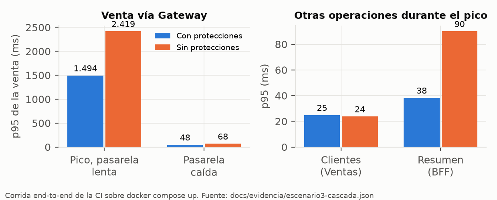
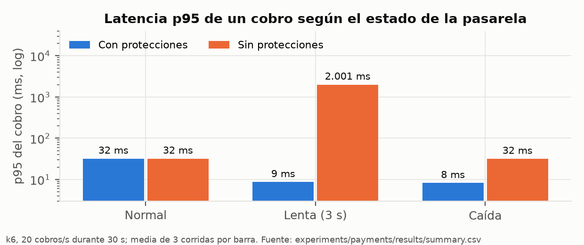
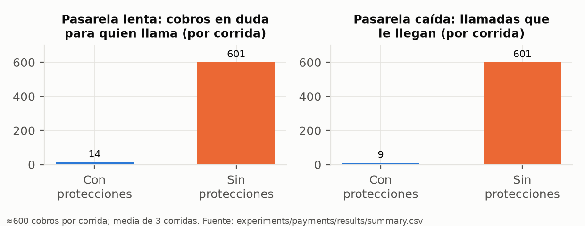
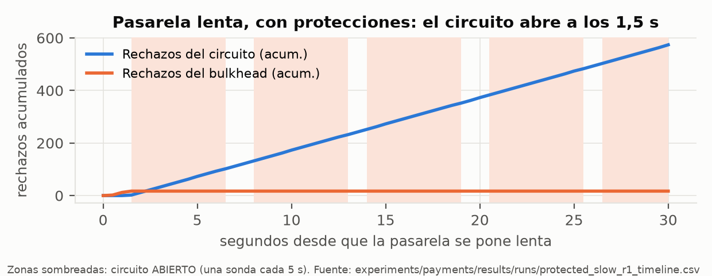

La tienda vende coordinando tres servicios con almacenes propios: Inventario reserva unidades, Pagos cobra a través de
una pasarela externa y Despacho crea la orden de entrega. El problema del encargo es el estado inconsistente: cobrar sin stock
o cobrar y no despachar. Construimos sobre la base de la T1 (Ventas REST + Inventario gRPC) un sistema de 7 servicios y 4 bases que se
levanta con un único docker compose up, expone sólo un API Gateway, implementa la venta como Saga orquestada y protege la
dependencia frágil (la pasarela) con timeout, Circuit Breaker con fallback y Bulkhead. Lo central del trabajo es la evidencia: un
script reproducible provoca los tres escenarios obligatorios y la CI lo ejecuta en cada cambio sobre el Compose raíz.
127.0.0.1:8080); la CI falla si otro
servicio lo hace. Cada flecha indica el límite de espera de esa llamada: no hay llamadas entre servicios sin timeout.Gateway sin lógica de negocio. El Gateway valida un JWT HS256 (firma, emisor, audiencia y expiración), decide por rol
(reader lee, operator escribe), limita por cliente (60 peticiones por minuto por sub, con
429 y Retry-After), aplica una lista blanca de rutas y reenvía con un timeout por destino. No reserva, no cobra
y no tiene base de datos, así que cambiar la Saga no lo toca. Los servicios confían en la puerta: Ventas conserva su API key de la T1
como credencial servicio a servicio, que el Gateway inyecta y el cliente nunca ve. BFF por cliente. El BFF web arma, en una sola
respuesta a medida de la pantalla «mi compra», el estado del pago (Pagos) y del despacho (Despacho), consultados en paralelo. Si una
fuente falla responde 200 con partial: true (degradación elegante) y nunca escribe: crear o cancelar es
trabajo de Ventas, dueña de la venta (ADR-007). En la corrida de CI: {{expo_frase}}
| Criterio | Orquestación (elegida, en Ventas) | Coreografía |
|---|---|---|
| Orden inverso estricto | Lo impone un solo componente: no libera stock antes de confirmar el reembolso. | Cada servicio debería inferirlo de eventos ajenos. |
| Infraestructura | Llamadas existentes + dos tablas en la BD de Ventas. | Broker y outbox en cada servicio. |
| Respuesta al cliente | Síncrona: 201 o el error público real. | Asíncrona: obligaría a exponer un estado PENDING. |
| Evidencia | Una bitácora (sale_saga_events) con cada paso y compensación. | Correlacionar logs de tres servicios. |
Con tres pasos lineales y un dueño natural del proceso (Ventas ya era dueña de la orden y de la Idempotency-Key), la
coreografía añade infraestructura sin beneficio. Antes de cada comando el paso se marca IN_DOUBT en la base (write-ahead);
un rechazo confirmado compensa de inmediato y un timeout deja el paso en duda hasta reintentar o abortar, porque la llamada original pudo
aplicarse. Un recuperador con lease retoma las compensaciones pendientes con backoff exponencial.
| Salto | Clave estable | Qué evita |
|---|---|---|
| Cliente → Ventas | Idempotency-Key → mismo orderId; otro cuerpo con la misma key: 409 | Doble venta por reintento del cliente |
| Ventas → Inventario | ReserveStock/ReleaseStock por order_id | Doble reserva o doble liberación |
| Ventas → Pagos → pasarela | PUT /payments/{orderId}; en la pasarela charge-{orderId} y refund-{orderId} | Doble cobro o doble reembolso |
| Ventas → Despacho | PUT /dispatches/{orderId}, cancelar por orderId | Doble despacho |
Las protecciones viven en el único borde que sale hacia la pasarela (GatewayGuard en Pagos, ADR-006); duplicarlas en
Ventas o en el Gateway ocultaría qué dependencia falló.
DECLINED) es un éxito técnico.503 PAYMENT_CHARGE_REJECTED (garantía de que no hubo cobro) y Ventas libera el stock y responde 503 PAYMENT_UNAVAILABLE en
milisegundos. Si el cobro ya salió, responde 202 PENDING y un reconciliador lo resuelve. Las lecturas no tocan la pasarela.Todo se provoca desde fuera, por el Gateway, con scripts/demo/escenarios.mjs; el interior se observa con
docker compose exec (stock por gRPC, estado del circuito en /internal/v1/resilience, contadores de la pasarela y la
bitácora de la Saga en la BD de Ventas). La CI corre el script completo sobre el docker compose up raíz y guarda la
evidencia (docs/evidencia). Además, un experimento de carga con k6 aísla a Pagos (18 corridas de 30 s).
| Escenario | Cómo se provoca | Qué se mide | Hipótesis |
|---|---|---|---|
| 1 Éxito | Venta normal + reintento con la misma key + misma key con otro cuerpo | Estado, bitácora, stock, cobros en la pasarela, resumen BFF | Tres pasos DONE; un cobro y una reserva pese al reintento |
| 2 Compensación | Despacho recreado con DISPATCH_FAIL_CREATE=true | Orden de compensación, stock y cobros antes/después, orden pública | Reembolso antes que liberación; sin cobro ni reserva huérfanos |
| 3a Lentitud + pico | Pasarela slow (3 s) y {{peak}} ventas simultáneas de 4 clientes | Latencia y códigos de venta, circuito, bulkhead, otras operaciones | Con protecciones: fail-fast y el resto sigue; sin ellas: esperas de 2 s y cobros en duda |
| 3b Caída | Pasarela down y {{down_n}} ventas seguidas | Latencia, llamadas que llegan a la pasarela, aperturas | El circuito deja de enviarle tráfico |
| Brazo de control | Mismos pasos con Pagos recreado sin circuito ni bulkhead y timeout 30 s | Lo mismo | Muestra qué pasa SIN el patrón |
{{e1_frase}}
{{e2_frase}}
| Hora (UTC) | Paso | Acción | Resultado | Código |
|---|
| Observación | Antes | Después | Lectura |
|---|
| Fase / métrica | Con protecciones | Sin protecciones |
|---|

Transiciones del circuito registradas por Pagos durante el brazo protegido (log del contenedor):



La venta queda consistente en los tres escenarios: el camino feliz deja los tres pasos firmes, la falla del último paso se compensa en
orden inverso sin cobro ni reserva huérfanos, y la falla de la pasarela queda contenida en Pagos: el circuito corta el tráfico hacia una
dependencia que no responde, el bulkhead acota lo que una pasarela lenta puede retener y el resto del sistema sigue respondiendo. La
idempotencia por orderId en todos los saltos es lo que permite reintentar y compensar sin miedo.
Límites. La pasarela es simulada, con latencias deterministas; el circuito, el bulkhead y el rate limit son por instancia (hay una); el JWT es de demo; las cifras provienen de una máquina (runner de CI o portátil) y no son una prueba de capacidad. A la carga probada, las lecturas no se degradaron tampoco sin bulkhead: el aislamiento de lecturas viene del diseño (no tocan la pasarela). El aporte medido del bulkhead es acotar las llamadas en vuelo y los cobros en duda, no proteger las lecturas.
Reproducción. docker compose up --build -d --wait y luego node scripts/demo/escenarios.mjs todo
(4–6 min). El README explica cómo provocar cada falla a mano. Uso de IA: ChatGPT, OpenAI Codex y Claude Code como asistentes de
análisis, código, pruebas y redacción; el equipo revisó las decisiones y los resultados contra las pruebas y la evidencia de la CI.